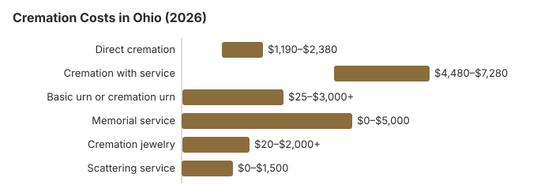

Traditional Cremation Costs in Ohio (2026)
Cremation in Ohio is no longer the quiet alternative it was a generation ago. At a 55% adoption rate, it has moved into the mainstream, and with direct cremation running about $1,700 versus $7,100 for a full traditional funeral, the economic case is clear. Beyond Ohio, a funeral cost calculator to compare cremation, burial, and service prices by state can help you understand how these figures fit into the broader national picture as you evaluate what Ohio families actually pay, what the regulations require, and where the real decisions live.
Types of Cremation in Ohio
Direct Cremation
- Ohio's lowest-priced choice
- No viewing or rites first
- Body taken straight to cremation
- Remains go home with the family
- Memorial can be set for later
Cremation with Service
- Service held, then the cremation
- Family may have a visitation; a viewing can use a rental casket rather than one bought outright, so ask whether the Ohio home offers one
- Rites at a funeral home or church
- Each viewing-related charge, including any rental casket and the use of the facility for a viewing or service, has to appear on the price lists the FTC Funeral Rule requires, so compare those lines between Ohio homes
- A basic urn is typically part of it
- Similar to a full service funeral, and a rental casket for the viewing can keep that part of the cost down
Nationally, direct cremation costs usually fall in the low thousands, with an NFDA 2023 median of $2,645 for direct cremation with a family-supplied container, so Ohio's $1,700 is relatively competitive.
Cremation with a viewing and service at a funeral home has an NFDA 2023 national median of $6,280.
What Each Part of an Ohio Cremation Costs
| Item | Average Cost | Range |
|---|---|---|
| Direct cremation | $1,700 | $1,190 – $2,380 |
| Cremation with service | $5,600 | $4,480 – $7,280 |
| Basic urn or cremation urn | $50 – $300 | $25 – $3,000+ |
| Memorial service | $500 – $2,000 | $0 – $5,000 |
| Cremation jewelry | $50 – $500 | $20 – $2,000+ |
| Scattering service | $200 – $600 | $0 – $1,500 |
Ohio figures, explained: they are estimates from our cost model, not prices taken from Ohio crematories, so line quotes up against them and do not treat them as a quote or advice. Read our method and the disclaimer.
State sources: Ohio Rev. Code § 9.15; Ohio Admin. Code 4717-17-06.

This table shows the overall cremation cost, but cremation expenses depend on which basic services and additional services are included. In most traditional arrangements, the basic services fee, with a national median of $2,495 in the NFDA 2023 study, covers the funeral director's time and legal paperwork and is often the largest share of traditional cremation costs.
For comparison purposes, cremation prices can shift line by line. The cost of cremation itself often includes a cremation fee of about $200 to $500, while the cremation process typically costs between $350 and $700. Body transportation fees usually cost between $300 and $500, and transportation distance can add $100 to $600. Local government permits for cremation can cost between $50 and $200, and death certificates and permits can cost between $50 and $200.
If you do not want an upgrade, a basic container may be enough, while a permanent urns option can run from $50 to over $500. Some families also add obituary notices, which can cost $100 to $400 or more. For families planning without life insurance or savings, understanding funeral costs when uninsured can be critical to avoiding debt and spotting lower-cost options.
Keep in mind that cremation costs vary, and prices vary by provider, distance, and selected extras. If you're comparing options, it may help to look at Ohio burial costs and cemetery pricing in 2026 alongside cremation quotes to see the full range of choices. Some providers also charge witnessing fees of $50 to $200, and cemetery costs can add between $350 and $3,000 or more depending on inurnment choices.
Cremation Trends Around Ohio
Most Ohio crematories are operated by funeral homes rather than standalone facilities, which means direct cremation in Ohio usually goes through a funeral home intake even when no service is attached. That does not materially change the $1,700 price point in Ohio, which sits well below the NFDA 2023 national median of $2,645 for direct cremation with a family-supplied container, but the intake paperwork and authorization timelines still tend to mirror those of a full-service arrangement.
These figures are best read as local benchmarks, because provider structure, service mix, and the National Funeral Directors Association data behind the median cost can shift pricing substantially from one market to another. A crematory-owned provider in Columbus or Cincinnati may quote a different direct-cremation price than a small-town funeral home that sends bodies to an outside crematory, so ask each one what is included. Ohio's pricing also reflects broader funeral industry trends, including a national median cost for traditional burial with viewing of about $8,300 and cremation rates projected to reach 82.3% by 2045.
Cremation Resources
- Funeral Consumers AllianceNonprofit advocacy: compare cremation providers
- Cremation Jewelry GuideMemorial keepsakes and remembrance options
- Cremation vs. Burial CostsSide-by-side cost comparison
- Pet Cremation CostsOptions and prices for pet cremation and memorials
- Final Expense InsuranceCoverage options to help pay for cremation costs
Compare Funeral Costs
- Average Funeral Cost in 2026National cost breakdown with real prices
- Cremation vs. Burial Cost ComparisonSide-by-side price comparison to help you decide
- Funeral Cost BreakdownEvery line item explained: know what you're paying for
- Cheapest Funeral OptionsLower-cost alternatives, with typical price ranges
- Direct Cremation: Most Affordable OptionCremation with no viewing or ceremony, and what its price should include
- How to Compare Funeral PricesStep-by-step guide to getting the best price
How to Save on Cremation in Ohio
Cremation costs vary significantly by provider and service level, so these strategies can make a real difference:
- Get General Price Lists from several Ohio providers and compare identical items, since the Funeral Rule lets you see itemized prices before you buy.
- Price direct cremation as standalone: Ohio funeral homes often bundle direct cremation into a broader cremation package. Ask for the pure direct cremation price (transport, cremation, return of ashes only), and ask exactly what that price includes so you can spot add-ons and identify the lowest true price.
Before You Sign for Cremation in Ohio
Ohio requirements and checks before choosing cremation:
- Phone pricing and disclosures: Under the Funeral Rule, families may ask for prices over the phone, and the general price list GPL must separately disclose cash advance items
Frequently Asked Questions
What is the typical price of cremation in Ohio?
If you're asking how much cremation costs in Ohio, the answer depends on the service level and provider: direct cremation (transport, cremation, and return of ashes) starts around $1,700, while full-service cremation with a ceremony lands near $5,600.
What types of cremation are available in Ohio?
Families in Ohio can choose from three main types: direct cremation ($1,700), the most affordable option with no viewing or ceremony; cremation with memorial service (often called a memorial cremation, meaning the cremation happens first and the service is held later); and traditional cremation ($5,600), a full funeral service before cremation.
Does Ohio have specific rules for cremation?
Ohio keeps a 24-hour minimum before cremation, and its Revised Code chapter 4717 lets you settle the paperwork early. Under §4717.21, a person can sign a preneed cremation authorization with one witness and later revoke or transfer it by written notice. For ashes nobody collects, §4717.27 lets the crematory deliver them after 30 days and, after 60 days, place them in a grave, crypt or niche or scatter them.
Where are ashes allowed to be scattered in Ohio?
Ohio scattering rules depend on the specific location. Families in Ohio also often opt for columbarium niches, burial of the urn, or keepsake jewelry in place of scattering.
Why is cremation growing in Ohio?
In Ohio, cremation costs an estimated $5,400 less than a traditional burial and leaves the memorial date open; the state's 55% cremation rate is 8.4 points below the 63.4% national rate that NFDA projected for 2025. Planning ahead as part of the funeral planning process can also reduce stress and make it easier to compare options before an urgent need.
How quickly can cremation be completed in Ohio?
Ohio requires a 24-hour wait after death before cremation (Ohio Rev. Code § 4717.23), and the paperwork has to be complete as well, so ask the provider for the expected date. Direct cremation, about $1,700 in Ohio, is usually first to proceed because no service is involved.
Is it possible to have a ceremony before cremation in Ohio?
A formal funeral service with an open casket generally requires embalming, while a viewing before cremation may use a rental casket if there is no burial plot involved.
Are there lower-cost alternatives to standard cremation in Ohio?
Yes. Body donation can be a low-cost alternative to traditional arrangements, and no cost cremation is typically available through body donation programs for eligible donors. In some cases, free cremation is offered when a body is donated to science, and the ashes are often returned to family members afterward.
More for Ohio
Ohio's $10 permit that authorizes cremation
In Ohio the document that allows a cremation is the burial permit from the local registrar or sub-registrar of vital statistics. The fee is set by statute at $10, and $9.50 of it goes to the state treasury. A permit for cremation cannot be issued on a provisional death certificate, so the cause of death has to be complete first. A crematory will not proceed without the permit and has to endorse it once the cremation is done (Ohio Rev. Code § 3705.17; checked October 29, 2026).
That is why an Ohio burial can sometimes go ahead while a cause of death is still being worked out, but a cremation has to wait until the doctor or coroner finishes the certificate.
Cremation rules and help in Ohio
To check that a cremation provider in Ohio is licensed, or to report a problem, contact the Ohio Board of Embalmers and Funeral Directors at 614-466-4252.
Ohio is not among the nine states the Funeral Consumers Alliance lists as requiring a funeral director, but no Ohio crematory will proceed without the death certificate, the cremation permit and the next of kin's signed authorization.
What the law says about timing: Ohio bars cremation until 24 hours after death and requires a complete death certificate, a burial-transit permit, and the next of kin's written authorization (Ohio Rev. Code § 4717.23).
An Ohio township or city pays for cremation, as well as burial, when the body is unclaimed or the person claiming it earns no more than 150% of the poverty line (Ohio Rev. Code § 9.15); the state board can reimburse it up to $1,000 for an adult and $750 for a child 11 or younger while funds last. (Source: Ohio Rev. Code § 9.15; Ohio Admin. Code 4717-17-06.)
An Ohio veteran who is cremated keeps the same burial benefit: the niche or plot and the marker in a national cemetery cost nothing. Options in Ohio include Dayton National Cemetery (937-268-2221), Ohio Western Reserve National Cemetery (330-335-3069), and Ohio Veterans Home Cemetery (419-625-2454). See cem.va.gov.
Next steps for a cremation in Ohio
- Ask whether an Ohio cremation price includes the death certificates and the permit fee, which some providers bill separately.
- Build the 24-hour wait set by Ohio Rev. Code § 4717.23 into any Ohio travel or memorial plans.
- Ask the Ohio township or city whether it pays for cremation, and bring proof of income at or below 150% of poverty.
- A cremation provider that misstates its prices can be reported at 614-466-4252.